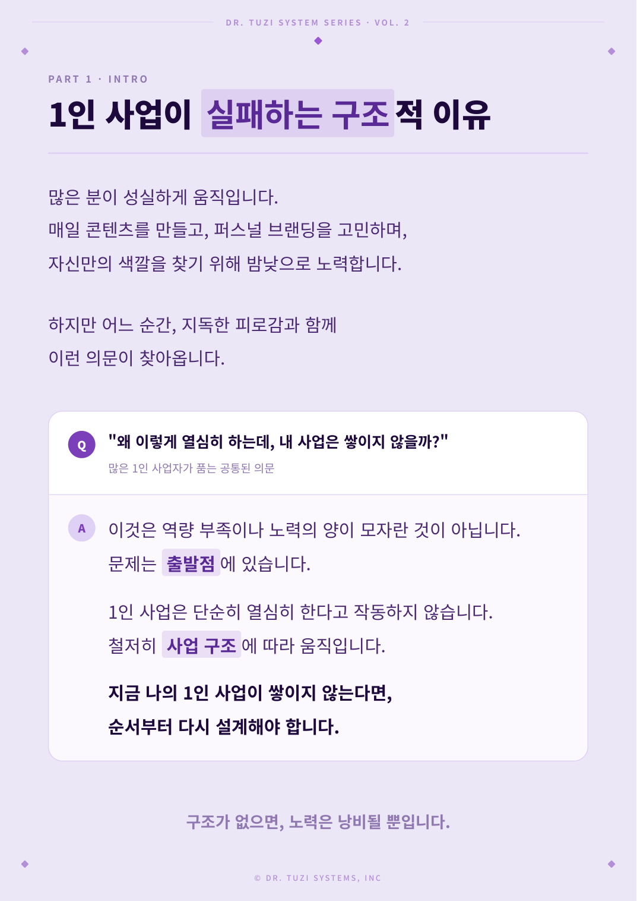
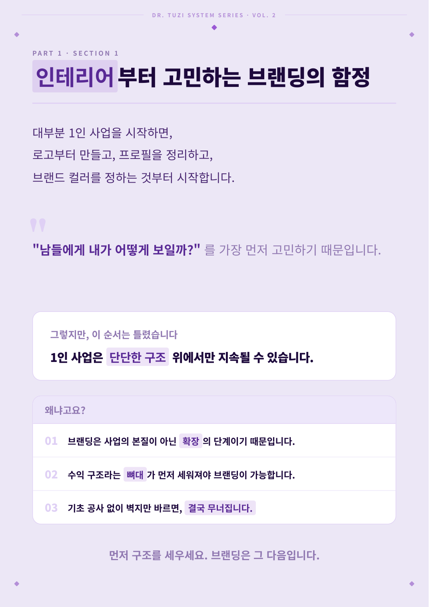
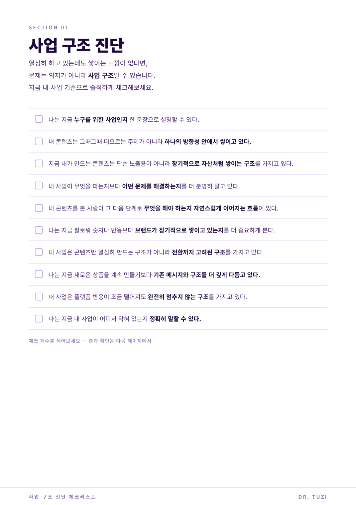
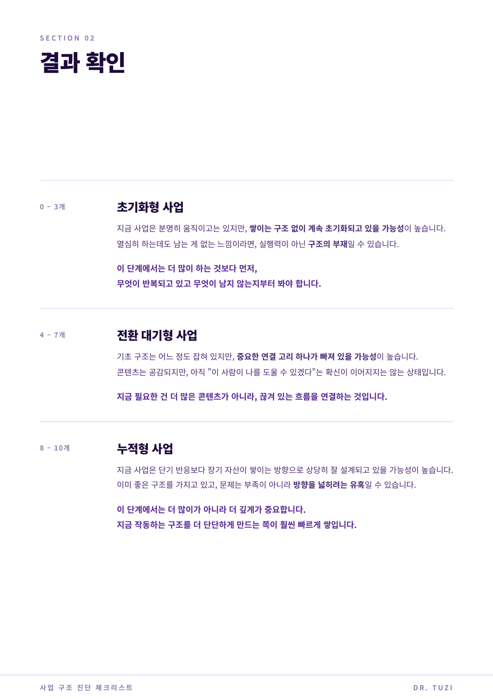
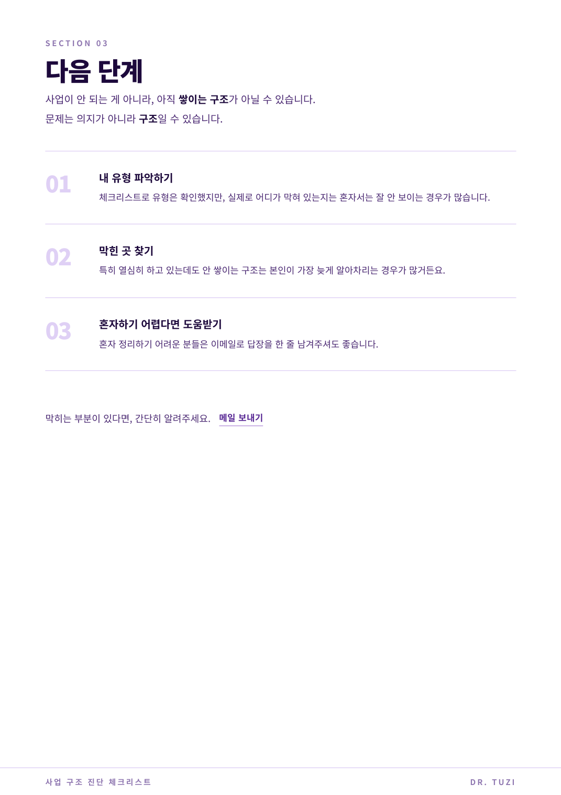
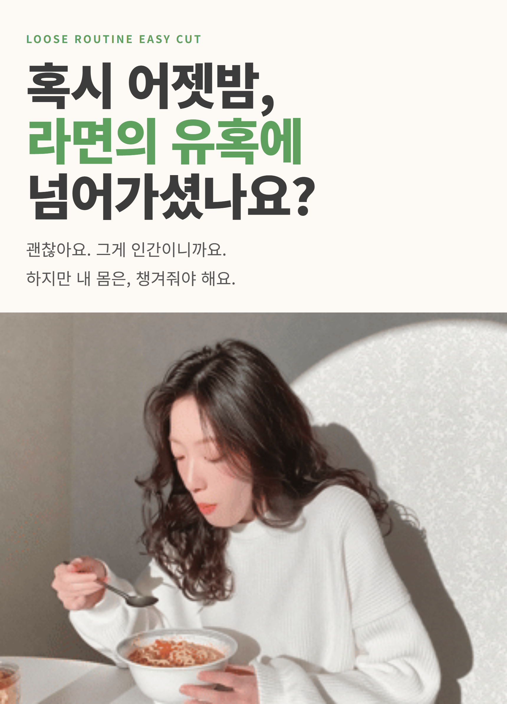
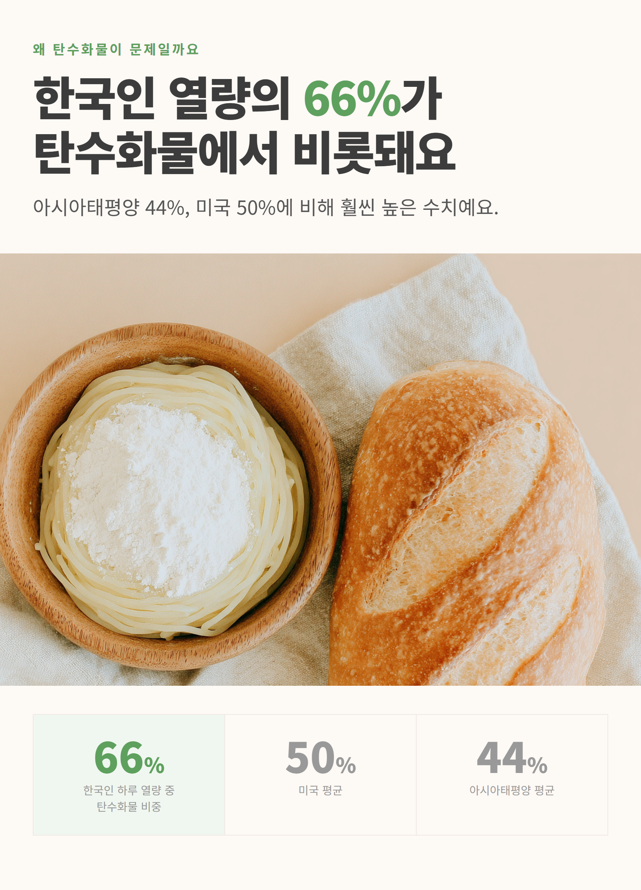
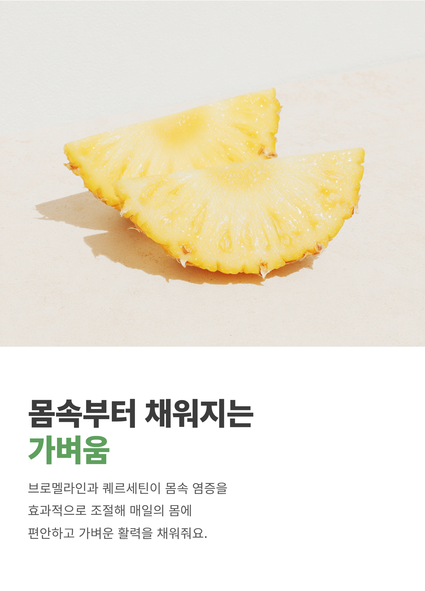
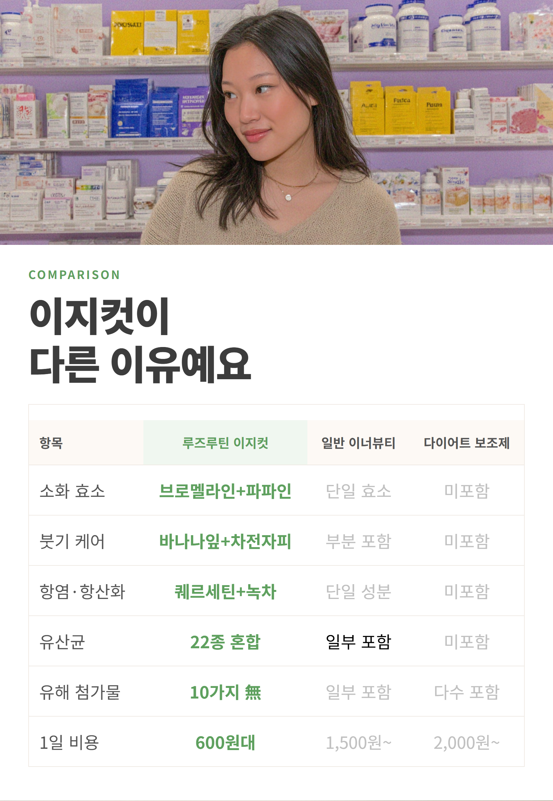
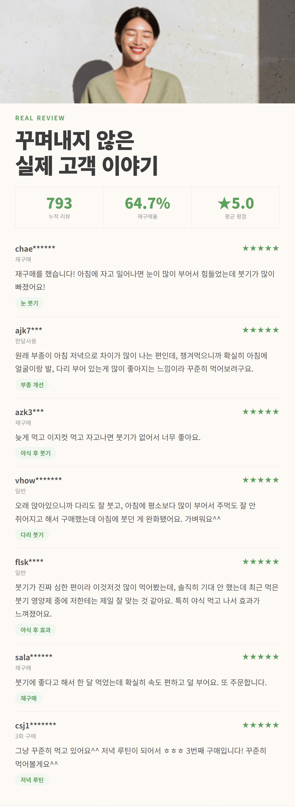

AI Portfolio
박현지
건국대 산업공학
|
LG CNS 데이터 분석 선임
|
카카오스타일 비즈니스분석팀
|
웰니스 브랜드 루즈루틴 대표
글로벌 60개국 데이터 표준화부터
1인 기업 AI 무인 자동화까지
기획, 구현, 매출 견인 전 과정을 완결하는 Full-Funnel AX 전문가
복잡도 높은 데이터를 시스템화했던 설계 역량으로, 비즈니스 전 공정을 AI로 자동화합니다.
Career Journey — 데이터 전문가 → AI 구현자
학부
건국대학교 산업공학과
비즈니스 프로세스 최적화
데이터 기반 의사결정 전공
›
2018 — 2022
LG CNS
LG전자 글로벌 60개국 데이터 PM
표준 태깅 체계 구축·매출 예측
›
2022 — 2024
카카오스타일 비즈니스분석팀
B2B 수익화 모델 설계
전사 흑자 전환 기여
›
2024 — 현재
루즈루틴 대표
웰니스 브랜드 Founder
AI 무인 자동화 시스템 직접 구축
강사 역량
이 경험으로 가르칠 수 있는 것
건국대 산업공학(IE) 전공 기반으로 비즈니스 프로세스를 시스템으로 설계하는 관점에서 AI 교육을 구성합니다. 12개 자동화를 직접 구축·운영한 Founder 경험을 토대로, 코딩 없이 레고 맞추듯 AI를 조립하는 비개발자 친화 로우코드 실습 위주 커리큘럼입니다.
Full-Funnel AX
지표 설계부터 기획, 구현, 매출 견인, 성과 분석까지 1인 브랜드를 직접 운영하며 풀퍼널 전 과정을 실전으로 완결한 강사. LG전자 글로벌 60개국 데이터 표준화 경험과 1인 기업의 민첩한 AI 실행력을 동시 보유.
Week 1 · 생성
AI로 콘텐츠 만들기
- GPT-4o 프롬프트 엔지니어링 실습
- 업무별 시스템 프롬프트 설계
- 이미지·영상·음성 생성 AI 활용
- 콘텐츠 자동 생성 파이프라인 체험
- 실습: 내 업무에 맞는 콘텐츠 생성기 만들기
Week 2 · 자동화
반복 업무 없애기
- n8n 워크플로우 자동화 실습
- Google Sheets + AI API 연동
- 이메일·Slack·SMS 자동화
- 데이터 수집·분류·보고 자동화
- 실습: 내 팀의 반복 업무 1개 자동화
Week 3 · 지능화
데이터로 AI 결정 내리기
- 사내 데이터 기반 RAG 챗봇 구축
- 고객 반응 데이터 AI 분석
- 초개인화 CRM 로직 설계
- AI 도입 비즈니스 임팩트 측정
- 실습: 우리 팀 전용 AI 어시스턴트 만들기
강사 차별점: Full-Funnel Capability
- Full-Funnel 완결성 지표 설계부터 기획, 구현, 성과 분석까지 혼자서 수행한 실전적 비즈니스 경험
- 산업공학적 최적화 복잡한 프로세스를 단순 기술 도입이 아닌 '최적화된 공정' 관점에서 재설계하는 역량
- 글로벌 데이터 거버넌스 LG전자 글로벌 60개국 마케팅 데이터 표준화 및 매출 상관계수 산식 도출 경험 보유. 현대모비스와 동일한 복잡도의 글로벌 비표준 데이터 환경을 직접 다룬 강사
- 비개발자 맞춤형 언어 실무자가 즉시 적용할 수 있도록 로우코드 템플릿과 실무 밀착형 언어로 전달
수강 후 기대 성과
- 즉시 쓸 수 있는 프롬프트 템플릿 10종+ 확보
- 팀 내 반복 업무 1개 이상 자동화 실현
- AI 도입 시 비용·시간 절감 측정 방법 습득
- 현업 AI 전환 로드맵 초안 수립
기술 스택
직접 구축·운영한 AI 기술 스택
모두 실제 프로젝트에 적용·운영 중인 도구들입니다.
GPT-4o / API
콘텐츠 생성 · 번역 · 구조화 출력
Claude API
코드 생성 · 복잡 문서 분석
Gemini API
RAG 응답 · 멀티모달 처리
Ollama (로컬 LLM)
온프레미스 LLM 운용
ElevenLabs
한국어 TTS · 자연스러운 음성 합성
Midjourney
브랜드 이미지 · 프롬프트 엔지니어링
n8n
워크플로우 자동화 · API 오케스트레이션
FAISS + RAG
벡터 DB · 의미 기반 유사도 검색
HuggingFace
추론 API · Sentence Transformers
Figma Plugin API
디자인 도구 자동화
Python · Flask
파이프라인 · 운영 대시보드
Playwright
웹 자동화 · 스크린샷 캡처
Google Apps Script
Gmail · Sheets · Forms 자동화
Prompt Engineering
시스템 프롬프트 설계 · 출력 구조화
Credentials
AI 교육 이수 이력
정부·대학·대기업 주관 AI 실무 교육 프로그램을 직접 수료하며 이론과 현장 구현 역량을 함께 쌓았습니다.
| 교육명 |
주관 / 운영 |
연도 |
비고 |
| 브랜드 역량강화 AI콘텐츠 제작과정 |
한국중소벤처기업유통원 / SBS STUDIO161 |
2025 |
수료 |
| AI+제조 전문인력 양성과정 |
서울 AI 허브 / 엘리스 |
2025 |
수료 |
| 디지털 브랜딩 및 AI 유통교육 실전과정 with 현대홈쇼핑 |
위팩토리 / 상생협업교육 |
2025 |
수료 |
| AWS AI기반 실전 창업 교육 |
국민대 캠퍼스타운 / 넥스트클라우드 |
2025 |
수료 |
| 데이터 문제해결은행 스킬업 교육 |
KMAC |
2025 |
수료 |
교육
비개발자 대상 로우코드 AI 커리큘럼 설계·직접 운영
교육 · 01
비개발자 자동화율 100%, 로우코드 AI 스터디 직접 기획·운영
문제 비개발 실무자의 높은 AI 자동화 진입 장벽과 코딩 의존적 교육 환경
해결 복붙만으로 완성 가능한 로우코드 5종 커리큘럼 설계 및 신청·결제·온보딩 전 과정 자동화 인프라 구축
성과 수강생 전원 실습 완료 및 비개발자 대상 교육 기획·운영 이력 확보
로우코드 교육 설계Google Apps Script자동화 템플릿 패키징온보딩 자동화커뮤니티 운영
비개발자 100% 실습 완료
운영 인프라 직접 자동화
5종 템플릿 커리큘럼 설계
CCS 운영 아키텍처
구글폼 신청→이름·이메일 수집
Apps Script 트리거→자동 환영 이메일 + 노션 링크 발송
결제 확인 로직→슬랙 워크스페이스 자동 초대
5종 템플릿 패키지→실습 커리큘럼 자율 수강
| 커리큘럼 | 구글 앱스크립트 자동화 5종 템플릿 |
| 자동화 범위 | 폼 제출 → 이메일 발송 → 슬랙 초대 전 구간 |
| 플랫폼 | Google Forms · Apps Script · Slack · Notion |
| 타겟 수강생 | 코딩 0% 비개발 실무자 |
| 운영 방식 | 비동기 자율 수강 + 질의응답 채널 |
5종 자동화 템플릿 커리큘럼
Template 01
폼 자동 회신
구글폼 제출 시 즉시 개인화 이메일 자동 발송
Template 02
결제 확인 → 슬랙 초대
결제 완료 감지 → 슬랙 워크스페이스 자동 초대
Template 03 · 04 · 05
메일머지 · 뉴스레터 · 연재 콘텐츠
시트 기반 개인화 발송, 정기 뉴스레터, 순차 콘텐츠 자동화
01-form-to-email.gs · engine.onboard
// 핵심 흐름만 공개 — 구현 로직은 내부 엔진에 캡슐화
function sendTemplateOnFormSubmit(e) {
const member = engine.extract_member(e);
engine.send_welcome_email(member, CONFIG);
engine.invite_to_slack(member.email);
}
실제 운영 화면
CCS 스터디 소개 페이지
Slack 봇 자동 온보딩 + 미션 안내 화면
Slack #step1-setup 채널
수강생별 개인화 미션 자동 발송 (봇 운영)
수강생 결과물: AI 앱 출시
코딩 비전공자가 30일 내 AI 앱 직접 기획·개발·출시
수강생 커뮤니티 반응
수강생들이 자발적으로 추가 기능 아이디어 제안
수강생 결과물: 웹페이지 완성
비개발자 수강생이 AI 활용해 서비스 페이지 직접 완성
Notion 단계별 가이드
단계별 실습 가이드 Notion 페이지 직접 제작·운영
생성 · 02
콘텐츠 제작 시간 87% 절감, AI 멀티채널 자동 발행
문제 전문 인력 부재로 인한 콘텐츠 제작 병목 및 정기 발행 불가
해결 단일 소스 데이터를 기반으로 각 채널별 규격에 맞춘 콘텐츠 동시 최적화 추출 기술
성과 콘텐츠 제작 리드타임 87% 절감 및 1인 운영 체제 완결
LLM 콘텐츠 생성 엔진AI 이미지 합성Semantic Prompt ArchitectureSEO 자동 생성멀티채널 자동 매핑
콘텐츠 1건 30분↓
비용 0원
블로그 + 인스타 동시 발행
3–4h기존 포스팅 1건 소요 시간
30분↓AI 생성 후 소요 시간
블로그 + 인스타동일 입력으로 동시 생성
블로그 HTML 미리보기 · 완성본
GPT-4o 자동 생성 · SEO 구조 + Midjourney 이미지 매핑 완료
인스타그램 카드뉴스 · 8장
동일 파이프라인에서 자동 생성 · 캡션·해시태그 포함
생성 · 03
영상 1편 30분 완성, 독자적 AI 가상 강사 파이프라인
문제 영상 제작 공정의 고비용 구조와 전문 촬영·편집 인력 의존성
해결 [이기종 엔진 통합] 텍스트 분석, 음성 합성, 가상 인간 합성을 단일 프로세스로 연결한 무인 영상 추출 로직
성과 리드타임 수주에서 30분으로 혁신, 운영 비용 95% 이상 절감
System IntegrationAI OrchestrationCost OptimizationVirtual Human SynthesisNeural TTS
영상 1편 30분
비용 95% 절감
멀티 포맷 동시 추출
시스템 설계 핵심
- 언어 장벽 없는 글로벌 스크립트 자동 변환 로직
- 자연스러운 비언어적 표현을 포함한 고정밀 음성 합성
- Shorts(9:16) / 일반(16:9) 멀티 포맷 자동 추출
- Proprietary: 렌더링 비용 최소화를 위한 단계별 캐싱 알고리즘 적용
| 입력 | 텍스트 원고 (단일 소스) |
| 출력 | 자막 포함 MP4 + 플랫폼 자동 배포 |
| 소요 시간 | 렌더링 포함 약 15–30분/건 |
| 포맷 | Shorts / Long-form 선택 가능 |
video_pipeline_logic.py
# 핵심 엔진 로직 — 구조적 흐름만 노출하여 기술 보안 유지
def generate_ai_video(raw_data):
script = optimizer.text_to_logic(raw_data) # 독자적 프롬프트 엔지니어링
audio = synthesizer.mapped_voice(script)
render = visualizer.render_human(audio, layout="edu_mode")
return distributor.auto_upload(render)
생성 · 04
운영 인력 0명, 100% 개인화 AI 오디오북 시스템
문제 대규모 고객 대상 맞춤형 데일리 콘텐츠 제작 리소스의 한계
해결 유저 프로파일링 데이터와 실시간 환경 변수를 결합한 자동 스크립팅 및 고정밀 음성 합성 발송
성과 운영 인력 제로화 기반 100% 개인화 고객 경험 제공
Lightweight LLM 추론 엔진Neural TTS이메일 자동화 인프라스케줄러 기반 무인 실행Python
개인화 100%
운영 인력 0명
매일 아침 자동 발송
동작 방식
- 개인 라이프스타일 프로파일 기반 컨텍스트 주입 설계
- 날짜·계절 반영한 맞춤 스크립트 매일 자동 생성
- 고정밀 다국어 Neural TTS로 자연스러운 한국어 음성 합성
- Proprietary: HTML 이메일 + 음성 파일 번들링 자동 발송 인프라
generate_and_send.py
# 핵심 흐름만 공개 — 구현 로직은 내부 엔진에 캡슐화
def run_daily_delivery(user_id):
profile = engine.load_persona(user_id)
script = engine.generate_daily(profile, date=today())
audio = engine.synthesize_voice(script)
return mailer.dispatch(user_id, audio)
생성 · 05
납품 리드타임 수주에서 수분으로, 데이터 연동형 지능형 문서 빌더
문제 정보 업데이트 시 발생하는 수동 문서 수정 작업의 비효율 및 휴먼 에러
해결 원천 데이터(JSON)와 디자인 템플릿을 실시간 동기화하는 코드 기반 문서 자동 빌드 환경
성과 제안서·가이드 납품 리드타임 수주에서 수분 내로 단축
LLM 카피 생성 엔진고성능 추론 엔진데이터 연동 렌더링 시스템자동 빌드 파이프라인클라우드 원클릭 배포
디자이너 0명
납품 수일 이내
클라이언트 피드백 14회 반영
자사 · 제품가이드 슬라이드
루즈루틴 이지컷 — 제품 가이드 22장 슬라이드
성분·메커니즘·복용법·임상 데이터 시각화 · 22장 구성
고객사 · 식품 제조업 — 신제품 기획 제안서
- 경쟁사 포지셔닝 매트릭스 자동 분석·시각화
- EFSA·PMID 임상 데이터 기반 서술 자동 생성
- JSON 데이터 수정 시 HTML 즉시 재빌드
- GitHub Pages 원클릭 배포 → 링크 공유
- 클라이언트 피드백 14회 반영 버전 관리
고객사 신제품 기획 제안서 · GitHub Pages 배포기밀
신제품 기획 제안서 전체 · 상단·하단 식별정보 마스킹
고객사 · 1인 크리에이터 — e북 & 셀프진단 체크리스트 PDF
e북 Vol.2 기밀

내지 — 구조 분석P.2

내지 — 브랜딩 전략P.3
사업 구조 셀프진단 체크리스트 기밀

사업 구조 진단P.2

결과 확인 (3단계)P.3

다음 단계 안내P.4
생성 · 06
외주비 0원, 데이터 기반 고전환 상세페이지 설계
문제 단순 디자인 위주의 페이지 구성으로 인한 낮은 구매 전환율과 고비용 외주
해결 소비자 심리 및 구매 여정 분석 데이터 기반의 24단계 설득 구조 설계 및 직접 구현
성과 외주 비용 100% 절감 및 데이터 중심 기획을 통한 매출 견인
LLM 전환 카피 설계Conversion ArchitectureUI 렌더링 시스템24-슬라이드 설득 구조E-commerce 최적화
외주비 0원
24슬라이드 완성
히어로→문제→성분→비교→리뷰→CTA
24제작 슬라이드 수
GPT-4o카피 + 구조 설계
HTML/CSS직접 구현·납품
자사 브랜드루즈루틴 이지컷

01 · Hero메인 비주얼

04 · Problem문제 통계

07 · Key Benefit핵심 효능

10 · Formula성분 설계

17 · Compare경쟁 비교

20 · Reviews고객 후기
자동화
반복 작업을 API·워크플로우·스케줄러로 대체
자동화 · 07
콘텐츠 처리량 300% 증가, 전 공정 AI 오케스트레이션 센터
문제 파편화된 AI 도구들의 실행 병목 및 수동 검수로 인한 파이프라인 지연
해결 [중앙 제어형 워크플로우 센터] API 연동을 통한 전 공정 무인 가공 및 실시간 모니터링 시스템
성과 파이프라인 24시간 상시 가동 및 전체 처리량 300% 상향
독자적 API 오케스트레이션데이터 소스 연동실시간 알림 인프라운영 모니터링 시스템자동화 캡처 엔진
24시간 무인 가동
처리량 ×3
발행 지연 0건
localhost:7788 · 루즈루틴 포스팅 대시보드
포스트 큐 현황 · 블로그/인스타 상태 · 미드저니 프롬프트 실시간 관리
자동화 · 08
작업 공정 90% 단축, 디자인 레이어 자동 매핑 기술
문제 대량의 콘텐츠 제작 시 발생하는 단순 반복적 텍스트 입력 노가다
해결 데이터 시트와 디자인 툴 레이어를 직접 매핑하여 콘텐츠를 즉시 주입하는 전용 자동화 로직
성과 디자인 공정 마무리 시간 90% 단축
디자인 도구 자동화 SDK경량 텍스트 최적화 엔진클라우드 자동화TypeScript
작업시간 90% 단축
시트 수정 1번으로 전체 업데이트
레이어 자동 매핑
자동화 효과
- 원문 → 슬라이드별 텍스트 길이 자동 최적화
- Figma 레이어 구조 자동 탐색·매핑
- 템플릿 디자인 유지한 채 콘텐츠만 교체
- v2: 레이어 오류 처리 및 안정성 강화
src/code.js · Figma Plugin
// 핵심 흐름만 공개 — 구현 로직은 내부 엔진에 캡슐화
async function autoFillDesign(sourceData) {
// 1. 의미 기반 콘텐츠 분할 최적화
const slides = await engine.splitContent(sourceData)
// 2. 디자인 레이어 구조 자동 탐색 및 매핑
const layers = engine.scanLayers()
// 3. 콘텐츠 주입 (디자인 구조 유지)
await engine.injectContent(layers, slides)
}
자동화 · 09
모니터링 시간 제로, 글로벌 채널 인텔리전스 모니터링
문제 산업 트렌드 파악을 위한 과도한 수동 모니터링 시간 소요 및 정보 누락
해결 100개 이상의 채널 데이터를 실시간 수집하여 핵심 맥락만 선별하는 AI 필터링 및 요약 레포트
성과 정보 수집 소요 시간 Zero, 전수 조사 기반의 의사결정 지원
영상 데이터 수집 엔진AI 분류·요약 추론 엔진자동 발송 인프라Python
100개 채널 전수 커버
주 수시간 → 0시간
AI 자동 분류·요약
100+모니터링 채널 수
100만↑구독자 필터 기준
AI 자동 분류HuggingFace 추론
주간 자동이메일 큐레이션 발송
자동화 · 10
누락 0건 달성, 교육 운영 완결형 자동화 시스템
문제 수강 관리, 알림 발송 등 반복적 운영 업무에서의 누락 및 관리 병목
해결 고객 여정별 주요 시점(D-Day)에 최적화된 개인화 메시지 및 운영 트리거 설계
성과 운영 업무 완전 자동화 달성 및 관리 누락 사고 0건
클라우드 자동화 스크립트이메일 자동화 엔진채널 연동 알림폼 이벤트 트리거
누락 0건
D-day 6단계 자동 알림
신청 즉시 SMS 발송
강의 D-day 업무 알림 자동화
- 구글 시트 강의 일정 → 매일 오전 9시 자동 실행
- D-21/14/10/7/5/3 기준 담당자 이메일·슬랙 발송
- 광고 기획·상세페이지·소재 업로드 등 체크리스트 포함
수강신청폼 → SMS 자동 발송
- 구글폼 제출 즉시 트리거 → 신청자 SMS 발송
- 강의명·일정·링크 포함 개인화 메시지 자동 생성
- 담당자 알림 이메일 동시 발송
dday-alarm.gs · form-to-sms.gs
// 핵심 흐름만 공개 — 구현 로직은 내부 엔진에 캡슐화
function runDdayMonitor() {
scheduler.getSchedule().forEach(item => {
if (engine.isDday(item))
notifier.dispatch(item) // 멀티채널 동시 발송
})
}
// 이벤트 트리거 → 개인화 메시지 즉시 발송
function onFormSubmit(e) {
mailer.sendPersonalized(e.data)
}
지능화
데이터 자산화 · AI 연결 · 의사결정 지원 체계
지능화 · 11
반복 CS 자동화, 비정형 지식 기반 RAG 피드백 엔진
문제 방대한 비정형 내부 콘텐츠 자산의 검색 활용도 저하 및 단순 CS 반복 응대
해결 60개국 유저 VOC·행동 로그 태깅 노하우를 이식, 사내 지식 아카이브를 벡터화하여 즉각적 피드백을 제공하는 지능형 RAG 시스템 구축
성과 비정형 데이터의 전략적 자산화 및 반복 CS 자동 대응 체계 완결
벡터 유사도 검색 엔진다국어 임베딩 모델추론 LLM 백엔드온프레미스 추론 엔진클라우드 서비스 배포지식 기반 검색 증강(RAG)
실서비스 배포 운영 중
반복 CS 자동 응답
콘텐츠 자산 재활용
RAG 시스템 아키텍처
블로그·뉴스레터 원문→문단 단위 텍스트 청킹
Sentence Transformers→다국어 벡터 임베딩 생성
FAISS Index→의미 기반 유사도 검색 (Top-K)
Gemini / Ollama→컨텍스트 주입 + 페르소나 응답 생성
Streamlit Cloud→웹 인터페이스 · 외부 서비스 배포
| 데이터 소스 | 블로그 포스트 + 뉴스레터 아카이브 |
| 임베딩 모델 | paraphrase-multilingual-MiniLM-L12-v2 |
| LLM 백엔드 | Gemini 1.5 Pro (API) + Llama3 (Ollama) |
| 검색 방식 | 키워드 검색 → 의미 기반 벡터 검색 |
| 배포 | Streamlit Community Cloud |
build_vectordb.py · chatbot.py
# 핵심 흐름만 공개 — 구현 로직은 내부 엔진에 캡슐화
index = engine.build_knowledge_base()
def answer(query: str) -> str:
# 의미 기반 검색 → 페르소나 컨텍스트 주입 → 응답 생성
context = engine.semantic_search(query)
return engine.generate_response(PERSONA, context, query)
커뮤니티 운영
구독자 무인 관리 · GA4·Supabase 연동 실시간 성과 인텔리전스
커뮤니티 운영 · 12
구독자 50+ 무인 운영, 뉴스레터 자동 발송 및 실시간 성과 인텔리전스
문제 구독자별 발송 진도 수동 추적 및 콘텐츠 성과 측정 수단의 부재
해결 스케줄러 기반 순차 발송 자동화 시스템과 GA4·Supabase 연동 실시간 성과 인텔리전스 대시보드 구축
성과 50+ 구독자 무인 관리 체계 완결 및 발송 누락 0건 달성
Google Apps ScriptStreamlitGA4 Analytics APISupabase순차 발송 시스템실시간 대시보드
발송 누락 0건 달성
50+ 구독자 무인 관리
GA4 + Supabase 연동 대시보드
루루노트 자동화 파이프라인
원고 txt 파일 (50+편)→JSON 컴파일 후 Google Sheets 업로드
Apps Script 스케줄러→화·금 오전 10시 자동 실행
구독자 시트 조회→현재 인덱스 확인 → 다음 편 발송
Gmail API→개인화 이메일 (닉네임·순서 치환)
| 원고 규모 | 50+ 편 (01.txt ~ 53.txt) |
| 발송 주기 | 화요일·금요일 오전 10시 KST |
| 개인화 방식 | 구독자별 인덱스 추적 → 순차 발송 |
| 대시보드 데이터 | GA4 + Supabase + Google Sheets |
| 시각화 도구 | Streamlit + Plotly |
apps_script_code_v2.js · bookclub_dashboard.py
# 핵심 흐름만 공개 — 구현 로직은 내부 엔진에 캡슐화
## [발송 엔진] Apps Script
function sendNextNewsletter() {
const subs = engine.load_subscribers();
subs.forEach(sub => {
const content = engine.get_next_issue(sub.index);
engine.send_personalized(sub, content);
engine.increment_index(sub);
});
}
## [대시보드] Streamlit
def render_dashboard():
metrics = engine.fetch_ga4_metrics()
subs = engine.load_subscriber_data()
return engine.render_charts(metrics, subs)